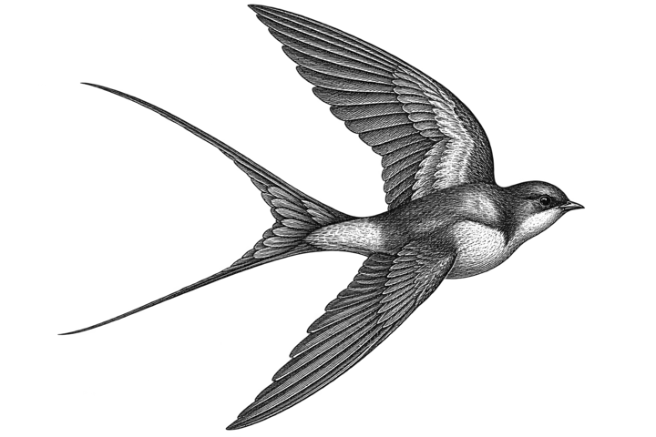
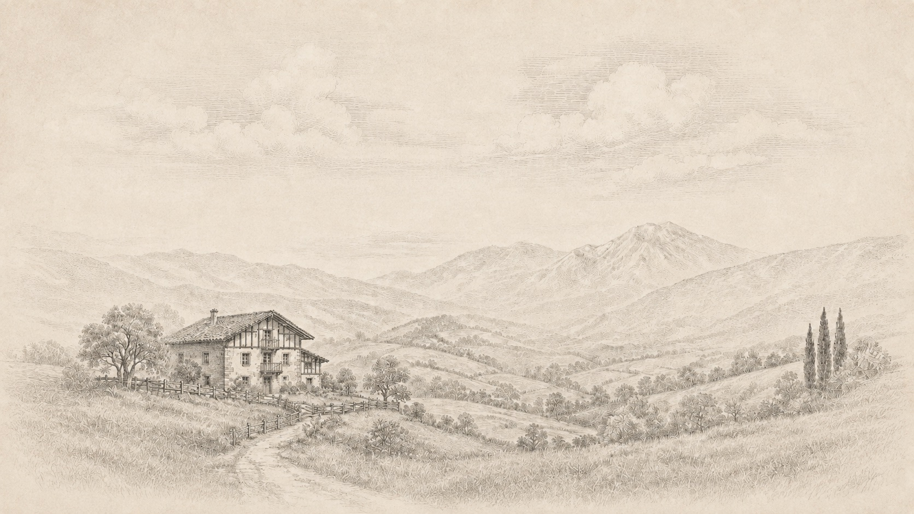
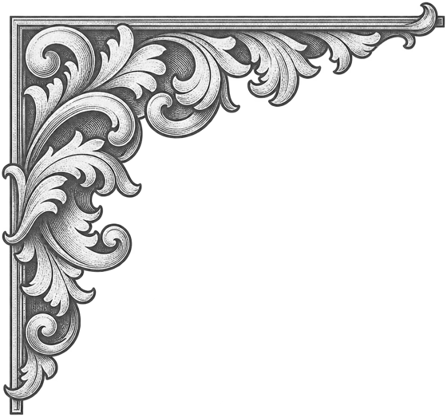
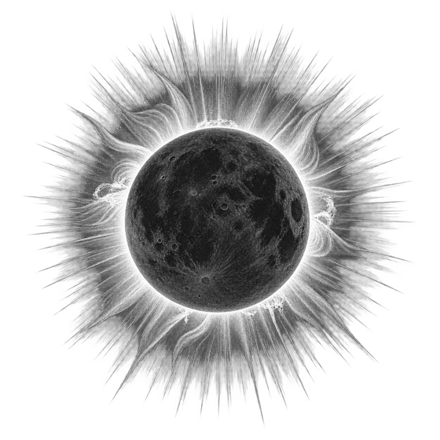

12 de agosto de 2026 · 20:27
Un eclipse total de Sol
29 segundos de noche

ENARA
29 · 08 · 2026


BIENVENIDA
Bilbao29 · 08 · 202608:30
El nombre
El nombre tiene su origen en el euskera. Viene de cuando la gente de aquí miraba al cielo en primavera y sabía, al ver esos pájaros negros y veloces, que el invierno había terminado.
El día
El sol salió sobre Bilbao a las 07:32 de aquel sábado. Tú llegaste a las 08:30, cuando todavía estaba bajo, a poco más de nueve grados sobre el horizonte. No había ni una nube en el cielo: cero por ciento de nubosidad, cero litros de lluvia. Hacía 18 grados.
Un 29 de agosto
Cápsula del tiempo
Esto lo escribimos el mismo día que naciste, para que algún día lo leas y te hagas una idea.
Curiosidades
El cielo de ese verano
12 de agosto de 2026 · 20:27
29 segundos de noche
28 de agosto de 2026
98,7 % iluminada al nacer

La carta
Estas son las posiciones reales de los planetas sobre Bilbao el 29 de agosto de 2026 a las 08:30, calculadas con efemérides astronómicas. Lo que se hace con ellas ya es otra cosa, y es la parte divertida.
| Astro | Signo | Grado | Casa |
|---|